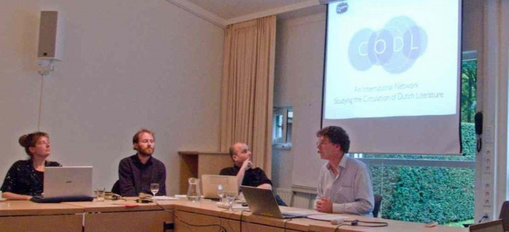

Workshop ‘A longitudinal Approach to Transnational Literatures’
In nauwe samenwerking met CODL is op 24 en 25 oktober 2013 op het Netherlands Institute for Advanced Studies (NIAS) in Wassenaar een workshop gehouden onder de titel ‘A Longitudinal Approach to Transnational Literatures: the Dutch Case. Identifying Longitudinal Patterns in the Dynamics between National Literatures and the International Field’. De workshop telde ongeveer 25 deelnemers uit België, Italië, Groot-Brittannië, Hongarije en Nederland.
Centraal stonden transnationale aspecten van de Nederlandse literatuur, waarbij onder meer onderzoek naar verscheidene casusteksten van CODL werd gepresenteerd. Zo had Orsolya Réthelyi (Budapest) het over de rol van Max Reinhardt bij de internationale receptie van Middelnederlandse literatuur, met name Beatrijs en Elckerlijc. Simona Brunetti (Verona) en Marco Prandoni (Bologna) lieten zien hoe Vondels Lucifer het Italiaanse theaterpubliek bereikte. Elke Brems (Brussel), Pieter Boulogne (Antwerpen en Leuven) en Stéphanie Vanasten (Louvain-la-Neuve) bespraken de receptie van Dimitri Verhulsts De helaasheid der dingen in het Franse taalgebied en in Rusland. Ton van Kalmthout (Den Haag) ging in op de vraag hoe en waarom onderzoek naar Louis Couperus als internationaal auteur het belang van de Couperus-kunde overstijgt.
Els Stronks, Geert Buelens, Tom Toremans en Ton van Kalmthout
Ook andere lezingen sloten nauw aan bij het werkterrein van CODL. Theo Hermans (London) besprak onder meer de brede uitwaaiering van het werk van Hendrik Conscience over een groot aantal landen. En Saskia Pieterse (Utrecht) ging na hoe Multatuli’s Max Havelaar circuleerde in anarchistische en socialistische kringen.
Frits van Oostrom, Pieter Boulogne, Elke Brems en Stéphanie Vanasten
De workshop werd georganiseerd door Geert Buelens (Utrecht), Thomas Vaessens (Amsterdam) en Els Stronks (Utrecht). Hij werd mede mogelijk gemaakt dankzij de gastvrijheid van het NIAS.